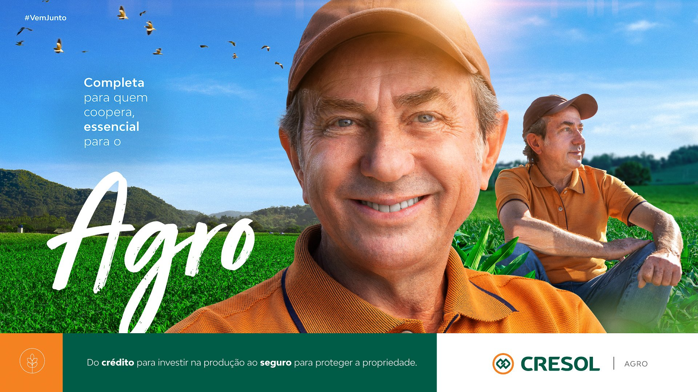

O Beto Carreiro World, localizado em Penha (SC), é um dos maiores parques temáticos da América Latina, recebendo milhões de visitantes por ano. Fotografar para um parque desse porte é um exercício de capturar emoção em movimento — sorrisos, adrenalina, magia e encantamento, tudo ao mesmo tempo.
O Desafio
Parques temáticos são ambientes desafiadores para fotografia publicitária: iluminação variável, multidões, atrações em movimento e a necessidade de capturar a essência emocional do lugar sem perder qualidade técnica. Cada imagem precisa funcionar tanto como publicidade quanto como retrato autêntico da experiência do visitante.

A Produção
A produção foi realizada em diferentes pontos do parque, cobrindo atrações, personagens, shows e bastidores. Utilizamos equipamentos que permitem trabalhar com luz natural e artificial em ambientes internos e externos, garantindo consistência visual em todas as imagens.
O trabalho incluiu tanto a fotografia de atmosfera — pessoas interagindo com o parque — quanto imagens conceituais para campanhas específicas de temporada e lançamento de atrações.
Resultado
Um banco de imagens diversificado que serve a múltiplas plataformas de comunicação: site, redes sociais, material de imprensa, mídia out-of-home e campanhas sazonais. Imagens que capturam a magia do Beto Carreiro e motivam visitantes de toda a região Sul e do Brasil a conhecer o parque.